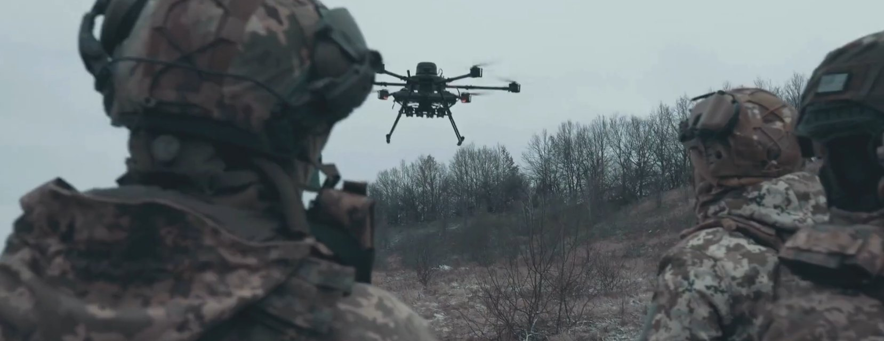
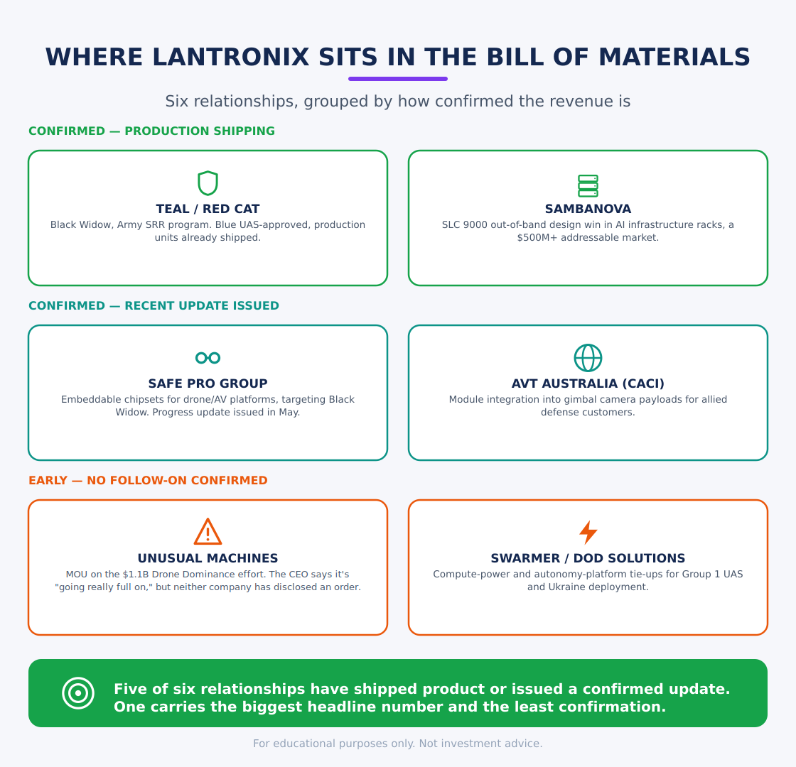
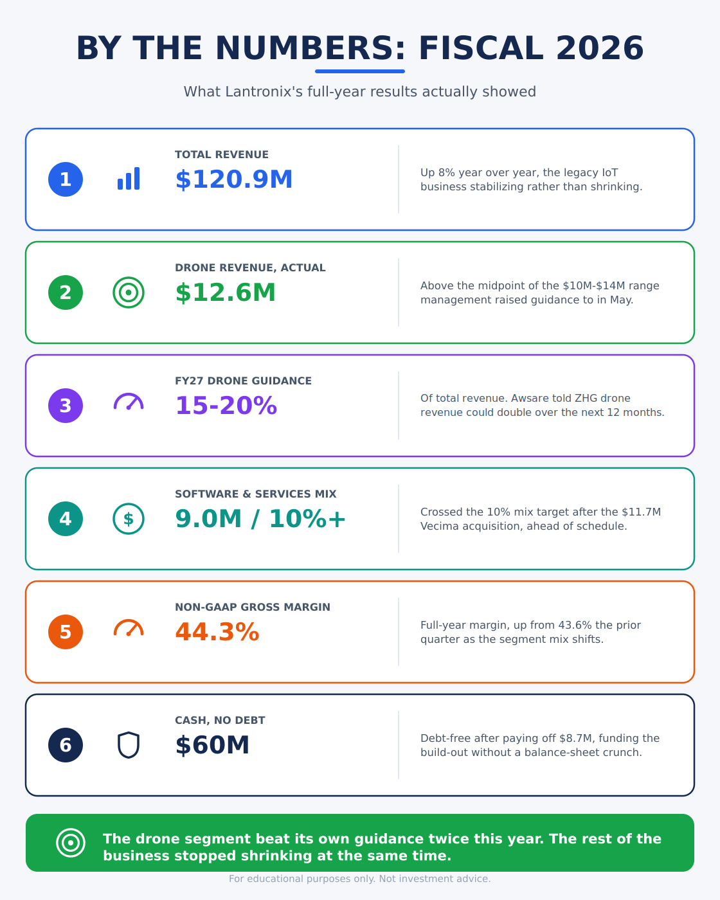
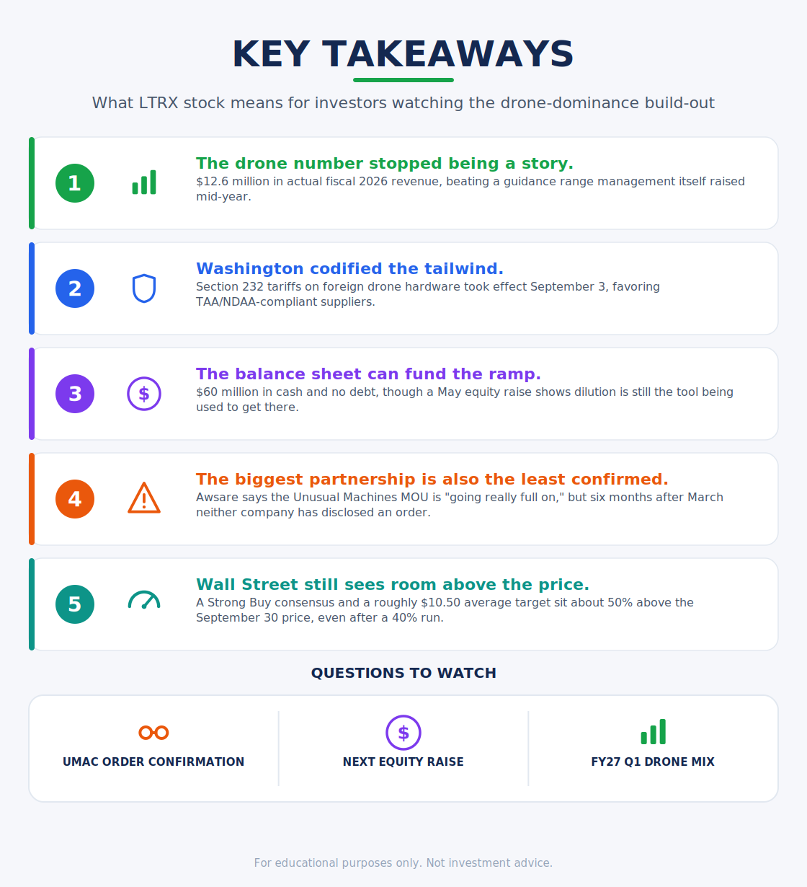

Lantronix builds the edge-AI compute and connectivity modules inside Teal, Unusual Machines, and for many companies in the Drone Dominance Program. Washington put a 100% tariff on imported drone hardware on September 3, and the Pentagon named its Gauntlet II winners two weeks later. Since mid-September, buyers have pushed LTRX stock up about 40%, and they have Lantronix’s August quarter to point to. CEO Saleel Awsare told The Zero Hour Group he thinks the company could double its drone revenue over the next 12 months.
LTRX trades near $7.06 as of midday September 30, 19% below its 52-week high of $8.75 and 62% above its 52-week low of $4.37. Shares closed at $5.05 on September 14 and $7.22 on September 29. At a market cap around $330 million, most defense-tech investors have never pulled up the chart. Lantronix booked $120.9 million in revenue for fiscal 2026, the year ended June 30, up 8%. The legacy IoT business stopped shrinking, and unmanned systems became the growth line management has built toward since last fall. A stable base plus a defense segment that beat its own guidance twice is why The Zero Hour Group is revisiting LTRX stock now, the people need to know.
Wall Street knows the drones. Teal’s Black Widow flies under the Army’s Short-Range Reconnaissance program, Unusual Machines supplies parts for the Pentagon’s Drone Dominance push, and Safe Pro sells AI threat detection. You don’t know the company whose compute runs inside them, because Lantronix designs its products to disappear into someone else’s. We will cover what they do in depth, with exclusive comments directly from the CEO, Saleel Awsare.
Where the Chips Sit
Lantronix’s core defense product is a system-on-module built on the Qualcomm Dragonwing QRB5165 processor. Lantronix designed it to meet Trade Agreements Act and NDAA requirements for Department of Defense procurement. Red Cat Holdings’ Teal Drones picked it for production of the Black Widow quadcopter, a Blue UAS-approved platform under the Army’s Short-Range Reconnaissance program, and Lantronix has shipped production units. Awsare calls Red Cat one of Lantronix’s largest customers.

Awsare walked our very own Benny Shaw through the pitch in an interview. The module drives the drone’s camera, and “without the camera, the drone is meaningless,” he said. The larger job is autonomy. “We just don’t have enough pilots,” Awsare said. “We can’t have one pilot per drone.” A drone flying without GPS, or through heavy jamming, has to decide for itself, and that takes onboard processing. “If you need autonomy, you need something called edge compute,” he said. “And we provide the edge compute.” He calls Lantronix “the brains of this drone,” the part that lets it “fulfill the mission and make it back.”
Lantronix now sells what Awsare calls a “good, better, best” lineup, sized to the AI models a customer runs, from short-range reconnaissance quadcopters up to Group 3 and Group 5 drones. The modules can run in FPV and one-way attack drones too, but Awsare says Lantronix focuses on platforms that need autonomy, “Gauntlet 2 and beyond.” Customers also get the software around the chip, including board support packages and image stabilization, built on 15 years of Lantronix camera work.
Lantronix added customers through the year. Swarmer signed on for a compute platform with about four times the onboard processing power for Group 1 drones. AVT Australia, a CACI subsidiary, is putting Lantronix’s module into gimbal camera payloads. DoD Solutions in Estonia pairs Lantronix compute with the AURA autonomy platform for deployment in Ukraine. Outside defense, SambaNova Systems chose Lantronix’s SLC 9000 out-of-band management product for its DataScale AI racks, a design win management ties to an addressable market above $500 million for that product line. Awsare added Trillium to the partner list in our interview. He said Lantronix has moved into Europe and Australia and is “moving into the Far East,” where a large Japanese customer asked to meet the team.
Investors ask about the Unusual Machines partnership most. The two companies announced it in March around an estimated $1.1 billion, multi-phase slice of the Drone Dominance program. Six months on, neither company has issued a follow-on update, and management didn’t mention Unusual Machines by name on the August earnings call. Awsare sounded more committed in our interview. He described an MOU with Unusual Machines CEO Allan Evans, whose company makes motors, rotors, and other drone components. “He might be the body, we are the brains,” Awsare said. “That partnership is going really full on. A lot of new customers coming our way.” An MOU carries no purchase commitment, and neither company has disclosed an order. If you count it as booked revenue, you’re ahead of anything either company has confirmed. The Safe Pro Group collaboration has fresher support: the two companies issued a progress update in May on embeddable chipsets for drone and autonomous vehicle platforms, with the Teal Black Widow program as a joint target.
The Numbers Behind the Pivot
Lantronix reported fiscal Q4 2026 on August 26: revenue of $31.2 million, up 8%, and non-GAAP EPS of $0.04, up from a penny a year earlier. Non-GAAP gross margin came in at 44.1%, up from 43.6% the prior quarter. For the full year, Lantronix posted $120.9 million in revenue and $0.15 in non-GAAP EPS, and cut its GAAP net loss to $0.10 a share from an $11.4 million loss in fiscal 2025. The company paid off the $8.7 million in debt it carried into the year and finished with $60 million in cash.

Unmanned-systems revenue hit $12.6 million for fiscal 2026. Management raised that segment’s guidance in May to $10 million to $14 million, up from $8 million to $12 million, and the result landed above the new midpoint. Lantronix grew active engagements in the business from about 10 a year ago to more than 30. For fiscal 2027, management expects unmanned systems to reach 15% to 20% of total revenue, more than $25 million if the company hits its own target of double-digit growth. Analysts’ consensus puts fiscal 2027 revenue at $139 million, up 15%.
Awsare gave us his own version of that math. A little over a year ago, he said, Lantronix’s drone revenue “was minimal.” Over the last 12 months it reached $12.6 million, and “over the next 12 months,” he said, “we could double it,” though he added that the company has “got to work through it.” A double lands near $25 million, in line with the company’s guidance.
Software and services revenue reached $9 million in fiscal 2026 and passed 10% of the business on a pro forma basis after Lantronix bought Vecima Networks’ industrial IoT unit for $11.7 million in July. The deal brought the Nero Global Tracking platform, about $5.3 million in annual revenue with $4.5 million of it recurring subscriptions, at gross margins above 60%. Management wanted software and services at 10% to 12% of revenue within two years and got there with one acquisition.
Washington Wrote It Into Policy
Two federal actions in the past six months backed the bet Lantronix made. Executive Order 14307, “Unleashing American Drone Dominance,” set the framework for the Pentagon’s Drone Dominance Program: $1.1 billion in direct procurement, $200 billion in Office of Strategic Capital lending authority, and a goal of more than 200,000 low-cost small drones by 2027 from a domestic-only supply chain with no Chinese motors or batteries. The Pentagon ordered about 30,000 units in Gauntlet I, which wrapped in June. In Gauntlet II, 19 companies flew 23 platforms through 1,858 sorties at Fort Carson, and in mid-September the Pentagon named its top performers and a plan to buy about 60,000 drones from that pool. Neros took first in close-quarters battle and third in deep strike, and Perennial Autonomy topped the deep-strike board. Early orders give Neros about 14,000 drones, Vector 5,000, and Skycutter at least 5,000, at around $5,000 a unit. The Pentagon runs Gauntlet 2.5, for reusable platforms, next, and plans Gauntlet III about six months after Gauntlet II.
The second action hit September 3, when Section 232 tariffs on imported unmanned aircraft systems took effect. Importers now pay 100% on drones over 25 kilograms, drones with thermal imaging, docking stations, and a list of critical components, and a second round of 25% tariffs on more components starts in February 2027. The rules cap allied suppliers at 15% for the EU, Japan, South Korea, Taiwan, Switzerland, and Liechtenstein and 10% for the UK, provided most critical components trace back to those countries or the US. Suppliers on the Pentagon’s Blue UAS Cleared List get 180 days before the tariffs apply, and Lantronix’s Teal Black Widow module sits on that list.
The tariffs promise Lantronix no specific dollar figure. They do hand a cost problem to any drone maker buying compute from China, at the same moment Lantronix is expanding its Plymouth, Minnesota line for NDAA and TAA-certified production. Management called NDAA and TAA compliance “table stakes” for defense programs on the August call, and as of September 3 federal law requires it for this supply chain. Awsare credits Washington for the opening. “Unless we as a country had said we need to go work on it, it would not have happened,” he told us. “Now that we are serious about doing this, I think it’s giving an opportunity for American companies like [Lantronix] to be successful.”
What Wall Street Sees in LTRX Stock
Six analysts cover the stock and all six rate it a Buy. JonesTrading’s Josh Sullivan started coverage July 15 at $12, the high end. Canaccord Genuity’s Austin Moeller reiterated $11 on August 28. Needham’s Austin Bohlig holds $11, up from $8.50 in June. Lake Street’s Jaeson Schmidt raised his target to $10 from $8 on September 18. Roth’s Scott Searle trimmed his to $9.50 from $10 after the August print, now the low end. The consensus rating is Strong Buy, and the average target sits near $10.50, about 50% above today’s price.
A month ago that gap was close to 100%. Lantronix beat its drone guidance twice this year, closed fiscal 2026 with $60 million in cash and no debt, and gained a domestic-manufacturing edge from the September tariffs. Buyers showed up mid-month. Volume topped 3 million shares on September 17 and 18, the days Awsare presented at Needham’s Defense Tech Investor Day in Minnetonka and Lake Street raised its target, and the stock closed higher every session from September 21 through 25. The forward P/E now sits near 30 times next year’s consensus EPS estimate of $0.23, up from about 22 times at the start of September.
Lantronix is also reshaping its board around defense. On September 22 the company nominated Jason Lamb for election at the November 3 annual meeting. Lamb runs The LGL Group, served as a Navy SEAL officer, and sits on the board of the Association for Uncrewed Vehicle Systems International. Chair Hoshi Printer, a director since 2010, and director Jim Auker won’t stand for re-election.

Awsare compares the drone build-out to a ballgame that hasn’t begun. “We’ve got nine innings to go,” he said. “We’ve not even started playing the game.”
Lantronix sits in the bill of materials of half a dozen drone programs, in a market Washington has backed with tariffs and $200 billion in lending authority. The fiscal 2026 numbers give you the first hard evidence that position pays. Buyers spent the second half of September pricing some of that in. At around $7, with all six analysts pointing about 50% higher. This stock could receive a rerate and go much higher sooner than people think. We are early.
DISCLOSURE
This is not financial advice. The Zero Hour Group publishes research and commentary for informational purposes only, not as a recommendation to buy or sell any security. Do your own research before you trade. Talk to a licensed financial advisor about your own situation. Every investment carries risk, including the loss of principal.
Sources
The Zero Hour Group interview with Lantronix CEO Saleel Awsare, conducted by Benny Shaw
Lantronix Reports Fiscal Fourth-Quarter and Full-Year 2026 Financial Results
Lantronix (LTRX) Q4 2026 Earnings Call Transcript, The Motley Fool
Lantronix Reports Fiscal Third-Quarter 2026 Financial Results
Lantronix Announces Pricing of $30 Million Underwritten Offering of Common Stock
Lantronix Announces Preliminary Inclusion in Russell 3000® Index
Lantronix (LTRX) Stock Forecast & Analyst Price Targets, StockAnalysis.com
LTRX Maintained by Lake Street, Price Target Raised to $10, GuruFocus
Lantronix CEO to Participate in Upcoming Investor and Industry Events, StockTitan
Pentagon unveils top performers in latest ‘Gauntlet’ for Drone Dominance Program, DefenseScoop
Scoop: Drone Dominance Program Gauntlet 2 Winners Secure Big Orders, Tectonic
Unleashing American Drone Dominance (Executive Order 14307), Wikipedia
New Section 232 Tariffs on Drones and Drone Components Take Effect September 3, Mohawk Global